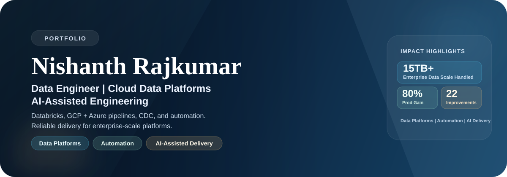

3y 10m
Experience
Cloud Data Engineering
I build integration-heavy data platforms across Azure and GCP, with Databricks-native engineering patterns, observability by design, and AI-assisted delivery that compounds team velocity.

3y 10m
Experience
15TB+
Data Scale
80%
Productivity Gain
11
POCs Beyond Target
14
Innovation Initiatives
22
Operational Improvements
Profile
ETL and ELT platforms, CDC flows, and integration-first system design for resilient business pipelines.
Operational excellence through retries, lineage, alerts, and observability patterns baked into delivery.
AI-assisted engineering workflows that shorten delivery cycles while preserving production-grade quality.
Executive Summary
Results-driven data engineering professional with 3 years and 10 months of progressive delivery across enterprise cloud modernization programs. I design and implement integration-heavy, cloud-native data platforms across Azure and GCP with strong depth in ETL and ELT, real-time CDC, API-first integration, and operational reliability.
My recent delivery spans BigQuery, Dataflow, Cloud Functions, Azure Data Factory, Synapse, Fabric, .NET services, and analytics enablement at 15TB+ scale. Through AI-assisted engineering workflows and process discipline, I have delivered measurable outcomes including 80% productivity gain, 11 POCs beyond target, and 22 operational improvements.
Outcomes
0%
Productivity Gain
0
POCs Beyond Target
0
Process Improvements
0
Enterprise Data Scale
Click Impact Tour to run a 4-step walkthrough of these outcomes.
Portfolio
Analytics Pipeline
Problem: Build robust sentiment analytics with business-ready reporting outputs.
Built: End-to-end Azure analytics pipeline using Synapse, Data Lake, Data Warehouse, Power BI, and Azure ML.
Result: Delivered analytics-ready model and visualization stack for faster decision support.
Synapse · Data Lake · Data Warehouse · Power BI · Azure ML
Open RepositoryNear Real-Time Signals
Problem: Capture social signals and process them continuously for near real-time analysis.
Built: Streaming workflow with Azure Functions, Event Hub, and Stream Analytics orchestrated through Python.
Result: Enabled low-latency ingestion and processing pipeline for signal-driven use cases.
Python · Azure Functions · Event Hub · Stream Analytics
Open RepositoryArchitecture Case Study
Scenario: Standardize high-volume enterprise ingestion, transformation, and serving across GCP and Azure systems.
Result: Resilient multi-path ingestion and transformation design for reliable analytics at enterprise scale.
Event Hub · APIs · Functions · Dataflow · ADF · Databricks · BigQuery · Synapse · Power BI
Reference RepositoryNo projects match this filter yet. Try another view.
Experience
Dec 2024 - Present
Jul 2023 - Dec 2024
Jul 2022 - Jul 2023
Credentials
Connect
If your team is building data platforms, integrating cloud ecosystems, or modernizing delivery with reliable AI-assisted engineering, I am open to collaborating.